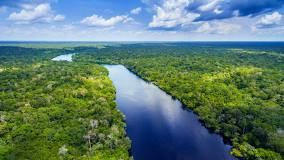

Trabalho de Geografia - Relevo da América Latina
A região amazônica, localizada principalmente no Brasil, é conhecida por sua densa floresta tropical e extensa bacia hidrográfica. O relevo varia, mas geralmente inclui planícies alagadas e montanhas baixas. Os rios da Amazônia são vitais para a região, desempenhando um papel importante no transporte e no ecossistema.
[ ! ] São 25 mil quilômetros de rios navegáveis. A área abrange seis países: Brasil, Peru, Bolívia, Equador, Colômbia Venezuela. No Brasil, o conceito de Amazônia Legal foi criado em 1966. Atualmente inclui: Amazonas, Acre, Pará, Amapá, Roraima, Rondônia, Mato Grosso, Maranhão, Goiás e Tocantins.
_____